Muskan Saini · Profile preview
All five sections rendered as ordinary image elements, as they appear in a README.





Clickable social links
Animations may vary by browser. Reduced-motion preferences are respected for CSS entrances; SVG SMIL animation support depends on the viewer.